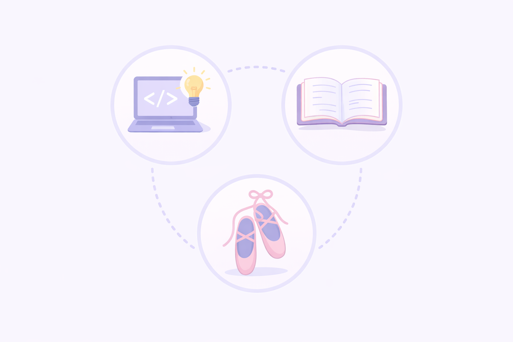

Tenho 16 anos e estou começando minha jornada na área de tecnologia. Estou aprendendo cada vez mais e me dedicando para construir o futuro que eu quero. Gosto de explorar coisas novas, estudar e evoluir aos poucos, sempre buscando melhorar minhas habilidades.
Gosto muito de tecnologia, principalmente de aprender como as coisas funcionam e criar meus próprios projetos. Também amo ler, porque os livros me permitem conhecer novas histórias e ideias. Além disso, a dança faz parte da minha vida, sendo uma forma de me expressar e me divertir.
